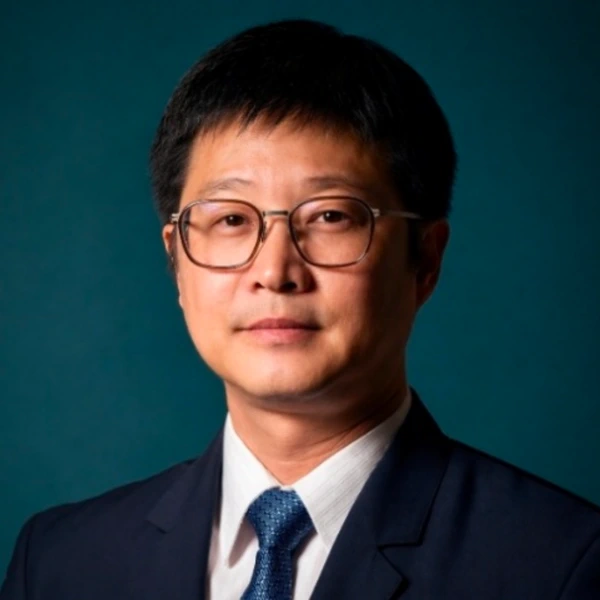

知識圖譜 · 社會網絡分析 · AI研究應用 · 媒體科技
黃裕元
Yu-Yuan Huang

聚焦於知識結構、關係網絡與 AI 時代的知識工作。其研究以文獻計量、知識圖譜、社會網絡分析與數位研究方法為主要取徑，探討知識如何被生產、組織、擴散與實踐。近年研究進一步關注生成式 AI、AI 素養與數位科技如何改變教育、圖書館、媒體與研究實務。其跨域經驗涵蓋新聞媒體、數位平台、科技內容與 AI 導入規劃，使其研究能連結學術知識生產、技術系統與公共傳播實踐。
10核心研究群
10研討會發表
1專利紀錄
20+媒體與科技實務年資
個人簡介
學術定位
研究定位
以媒體、教育、資訊與科技場域中的知識生產與資料實踐為核心，分析知識如何被組織、議題如何演化、行動者如何形成關係，以及AI與平台技術如何重塑研究與內容工作。
BibliometricsKnowledge MappingSNAAI in ResearchMedia Technology
教學定位
以社會科學研究設計、文獻回顧、文本分析、基礎數位資料分析與AI輔助研究為基礎，協助學生從媒體文本、平台現象與公共議題形成可分析的研究問題。
Research MethodsMedia TechnologyDigital Humanities
研究領域
研究主題與方法群
文獻計量與知識圖譜
分析研究趨勢、知識結構、主題演化與學術社群分布。
BibliometrixVOSviewerCiteSpaceHistCite
社會網絡與關係資料
處理行動者、議題、合作、資訊流與組織互動等關係型資料。
GephiUCINETR / igraph
AI與數位人文
觀察AI如何介入研究流程、媒體文本、資訊服務與知識工作。
Text MiningTopic ModelingTopicENA
媒體科技與平台研究
從新聞、科技內容、平台服務、產品流程與使用者需求分析媒體技術實踐。
教育治理與資料應用
以政策、治理、課程改革與學校系統作為資料分析與知識圖譜研究場域。
資訊政策與治理透明
關注資訊揭露、可解釋性、問責能力、資料生命週期與公共治理工具。
學術成果
近期學術成果
- 2025【TSSCI/Scopus收錄】近十年108課綱研究脈絡及發展趨勢：基於文獻計量學分析黃裕元、陳建志。《教育研究集刊》，71(2), 59–104. DOI: 10.6910/BER.202506/SP_71(2).0002
- 2025【ACI/EBSCO/ProQuest收錄】教育創業家知識圖譜及對應之中小學校長校務經營策略探究陳建志、黃裕元。《教育研究月刊》，374, 75–91. DOI: 10.53106/168063602025060374005
- 2025TIMSS主題研究趨勢與知識圖譜：2004–2024年文獻計量分析黃裕元、劉怡華。《臺灣教育研究期刊》，6(5), 203–236.
- 2025從文獻計量學看AI在英語教學中的發展脈絡與未來方向黃裕元。《臺灣教育評論月刊》，14(2), 148–174.
- 2026【ACI收錄，已接受待刊登】SDGs導向之學校治理整合：文獻計量與資訊圖譜分析黃裕元、賴美娟。《嘉大教育研究學刊》。
- 2025人本AI下臺灣高等教育轉型的機會、挑戰與因應策略黃裕元、林新發。《臺灣教育評論月刊》，14(1), 117–125.
- 2026Leveraging intentional network to promote district-level, equity-centered system change. Manuscript under reviewMolle, D., Fousek, B., Huang, Y.-Y., Liou, Y.-H., Awaludin, A., Childs, J., & Halverson, R. Journal of Educational Change.
- In pressRelational infrastructures of change: Insights from twenty-five years of social network analysis in school effectiveness and improvementLiou, Y.-H., Huang, Y.-Y., & Daly, A. J. In International Handbook of School Effectiveness and Improvement, 2nd ed. Springer.
- 2026文獻計量學實作指南：從知識圖譜到研究洞見的方法、工具與實例黃裕元。五南出版社，出版中。
- 2024AI在教育領域應用研究的熱點與發展趨勢：基於文獻計量分析的研究黃裕元、林新發。《師資培育新圖像》。中華民國師範教育學會。
- 2026Capitalizing on the learning potential of intentional networks to advance leadership for equity [Paper presentation]Fousek, B., Huang, Y.-Y., Molle, D., Liou, Y.-H., Awaludin, A., Saldaña, C., & Childs, J. AERA 2026 Annual Meeting, Los Angeles, CA, United States.
- 2026The generative AI turn in libraries: Mapping emerging research, AI literacy, and service innovationHuang, Y.-Y., & Tsay, M.-Y. VALA2026 Conference, Australia. Accepted.
- 2025TIMSS主題研究趨勢與知識圖譜—2004–2024年文獻計量分析黃裕元、劉怡華。2025芝山博研討會。臺北市，臺灣。
- 2025教育研究脈絡之韌性領導：文獻計量分析與趨勢探索賴美娟、黃裕元。2025芝山博研討會。臺北市，臺灣。
- 2025融合教育下的聽損研究：臺灣20年來的跨領域文獻計量分析黃裕元、劉怡華。2025年特殊教育國際學術研討會。嘉義市，臺灣。
- 2025人工智慧在K-12教育的發展脈絡：跨十二年文獻計量回顧黃裕元。AI智慧時代課程教學與傳播科技學術研討會。臺北市，臺灣。
- 2025兩岸家校社協同育人之比較研究：基於文獻計量學視角黃裕元、黃雪。新時代志業良師之挑戰與展望研討會。臺中市，臺灣。
- 2024校園罷凌研究文獻計量學分析：以2013至2024年Web of Science資料庫為基礎黃裕元。2024校長學研討會。臺北市，臺灣。
- 2024中國大陸AI教育應用研究趨勢：基於2003–2024年文獻計量分析黃裕元。2024芝山博研討會。臺北市，臺灣。
- 2024人工智慧應用於英語教學之研究趨勢：基於2014–2024年的文獻計量分析黃裕元。AI智慧產業發展與人才培育國際研討會。臺南市，臺灣。
- 2018智慧醫療借貸服務裝置 / Intelligent Medical Loan Device專利案號 M558963。新型創作人之一。
代表專案
研究與實務專案軸線
AI in Libraries
以比較式科學圖譜分析生成式AI在圖書館研究、AI literacy、服務創新與responsible use中的定位轉變。
Education Knowledge Mapping
以課綱、SDGs、TIMSS、AI教育與特殊教育等主題建立教育研究知識版圖。
AI-Ready Consulting
協助組織進行流程診斷、資料盤點、應用場景界定與導入路線規劃。
專利
專利
智慧醫療借貸服務裝置 / Intelligent Medical Loan Device專利案號 M558963。新型創作人之一。
聯絡
聯絡資訊
學術識別
ORCID: 0000-0003-3475-4735
ResearchGate: Yu-Yuan Huang
Website: yu-yuanhuang.github.io/lab/